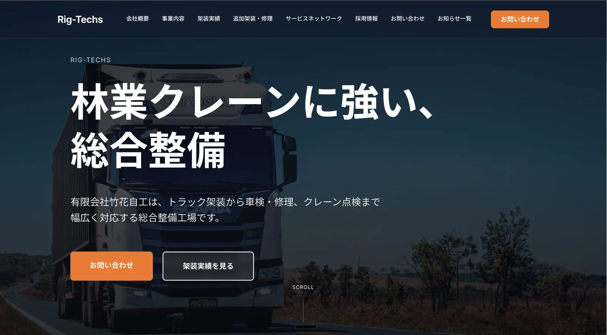

自動車整備工場のホームページを新規制作しました。地域密着型ビジネスの信頼感と専門性を最大限に引き出すモダンなデザインを採用。SEO対策を徹底し、地域検索からの集客を強化するサイト設計を行いました。
整備工場の持つ専門性と信頼感を、Webサイトを通じて効果的に伝えること。地域のお客様に確実にリーチするためのローカルSEO戦略が求められていました。
モダンでクリーンなデザインを軸に、整備工場のサービス内容と実績を分かりやすく伝えるビジュアル設計を実施。構造化データ（JSON-LD）の実装やモバイルファースト設計、Core Web Vitalsの最適化など、テクニカルSEOを徹底しました。AIを活用した開発プロセスにより、高品質なサイトを短期間で納品。
まずはお気軽にご相談ください。課題のヒアリングから最適な解決策の提案まで、丁寧に対応いたします。